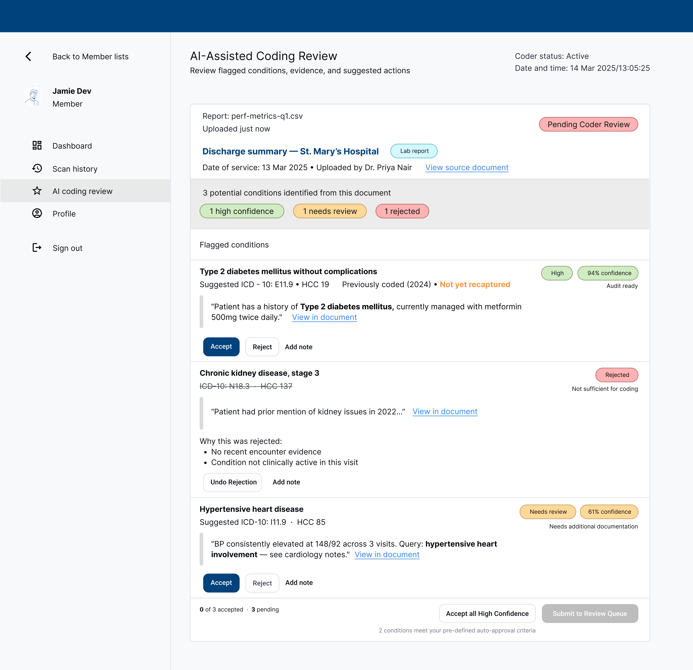
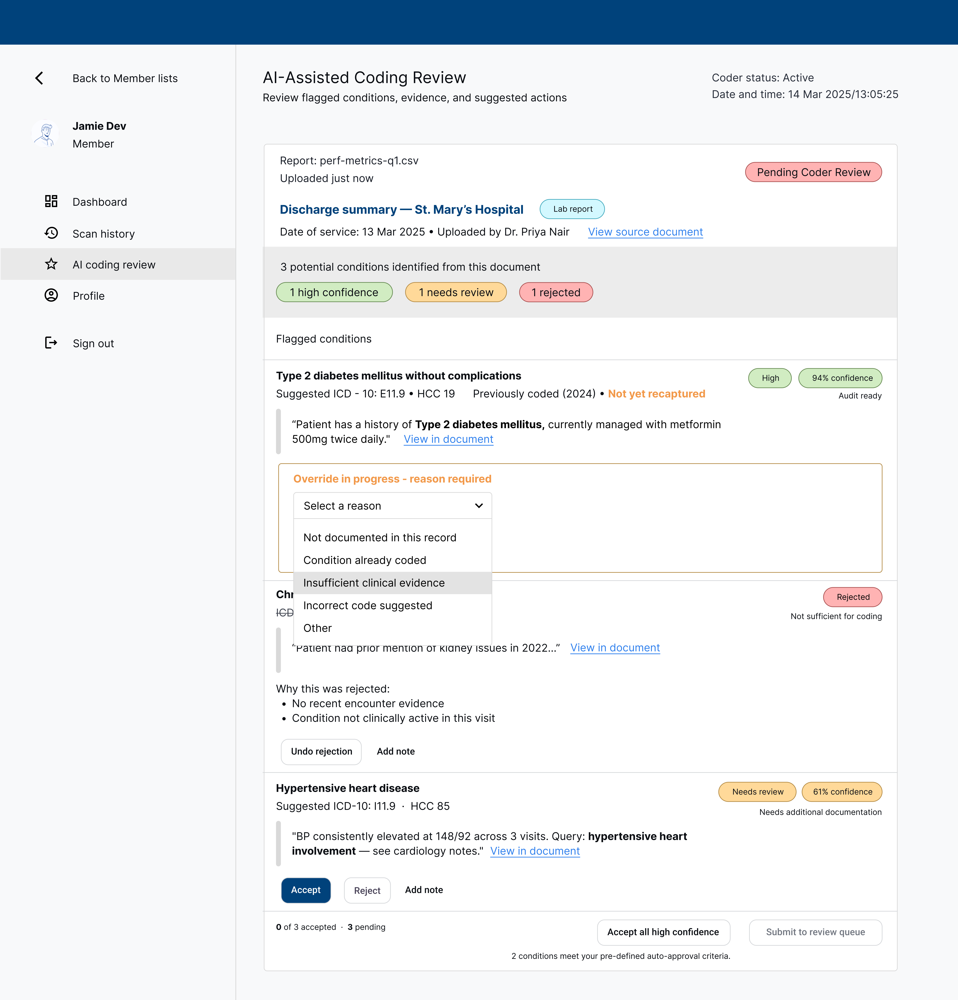
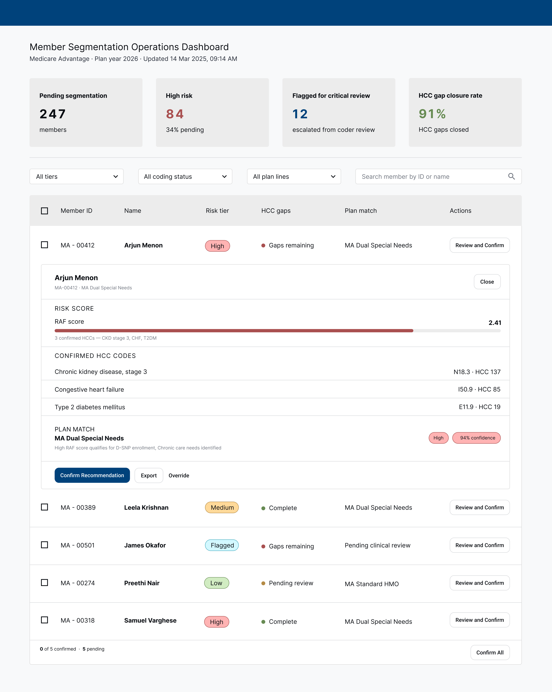
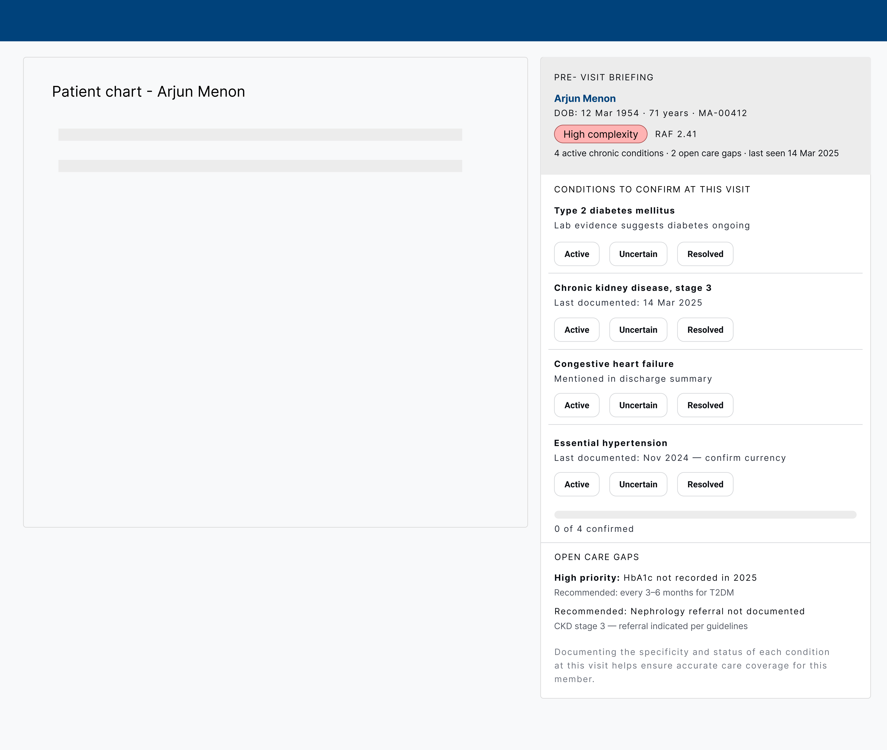
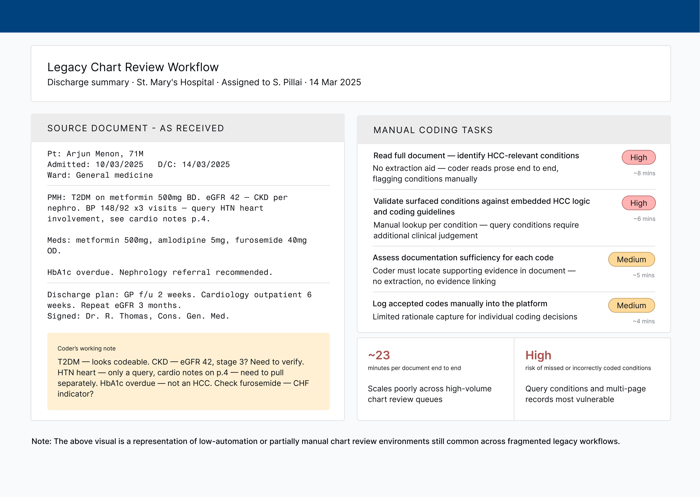

A systems-level concept for UST HealthProof’s risk adjustment ecosystem — using AI to turn unstructured medical records into actionable signals across four connected workflows.
Conceptual/speculative project for portfolio purposes.
Health plans operating in risk adjustment ecosystems like UST HealthProof’s often face a persistent challenge: records arrive as PDFs, scanned documents, and handwritten notes—making diagnosis capture slow and inconsistent. When chronic conditions are missed or uncoded, HCC scores may be incomplete, increasing audit risk and plan mismatch.
The issue cascades across the care pipeline: coders can miss conditions hidden in chart notes, enrollment analysts may make tier decisions on incomplete data, and providers may start visits without a clear view of the patient’s known conditions.
When a member’s documented conditions are not reflected in their risk score, plans can lose accuracy, revenue, and member trust.
For primary research, I would conduct structured interviews with medical coders and care managers in the risk adjustment workflow, observing their interactions with Enrollment+™ to surface friction points, cognitive load triggers, and workaround behaviours. Findings would be mapped to a journey anchored to the chart review and HCC gap closure process.
For secondary research, I reviewed CMS-HCC risk adjustment model documentation and OIG audit reports on risk adjustment data validation to understand the regulatory and financial stakes of coding inaccuracies.
The product concept serves three distinct roles across the payer and provider ecosystem. Each has a different relationship to the data, a different definition of success, and a different tolerance for interface complexity.
Each screen corresponds to a distinct moment in the pipeline — from document upload to clinical encounter. The design decisions in each surface reflect who's using it, what they need to trust, and what action the system is asking them to take.

Each scanned document produces one card. Three conditions are flagged from a discharge summary: Type 2 diabetes mellitus at high confidence (94%), CKD stage 3 rejected with a reason ("not sufficient for coding"), and hypertensive heart disease at 61% needing review. Each flag shows the exact evidence snippet from the source text and an Accept / Reject / Add note action set. Coders can bulk-accept all high-confidence flags at the bottom without reviewing each individually.

Override expands inline — no modal or navigation away from the queue. A required reason dropdown surfaces five options: not documented in this record, condition already coded, insufficient clinical evidence, incorrect code suggested, and other. Selecting "Incorrect code suggested" would reveal a code substitution field, feeding a correction signal back to the AI model. Friction is calibrated to the flag's confidence — high-confidence overrides require a reason; lower-confidence ones do not.

Shared by risk adjustment and enrollment ops. Four KPI tiles surface the pipeline at a glance: 247 members pending segmentation, 84 high risk, 12 flagged for critical review, and a 91% HCC gap closure rate. Each member row shows risk tier, gap status, and plan match. Expanding a row (shown for Arjun Menon) reveals the RAF score bar, confirmed HCC codes, and a plan match recommendation with confidence score — all actionable with Confirm, Export, or Override.

A sidebar panel embedded in the existing EHR alongside the patient chart. No ICD-10 codes visible — condition names only, keeping the frame clinical rather than billing-oriented. Four conditions are listed with Active / Uncertain / Resolved toggles for the provider to confirm currency at the visit. Below, two open care gaps are framed as clinical recommendations: a high-priority HbA1c flag and a nephrology referral. The CDI nudge appears last, after clinical context has established trust.
Five decisions shaped the system's character — each one a deliberate answer to a tension between competing design values.
As a concept project, impact is framed as a hypothesis grounded in industry benchmarks for retrospective chart review and HCC gap closure programmes.
The concept reimagines a high-friction legacy workflow into a faster, more scalable review experience while preserving coder judgment and compliance controls.
